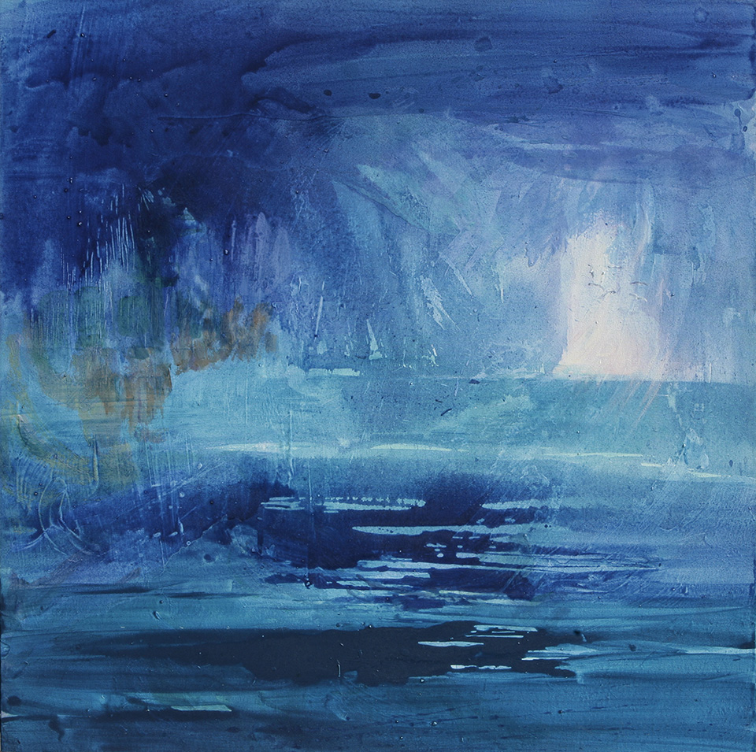

Artist´s vision
All my inspiration comes from Nature. This input from the natural world is processed through my own personal filters producing layers of meaning, and in my work I try to awaken people's vision to the realisation that we live on a very beautiful planet by opening their eyes to their surroundings in the hope that, by inspiring joy and an enhanced sense of wellbeing, this will lead them to take greater care of this wonderful world.
This is my aim, but rarely is it achieved. I can see that sometimes we artists are crazy as we aspire to heights of perfection which are ultimately unattainable. However, it is the pursuit of perfection and the hope that the next painting will bring us a step closer to achieving this ideal that draws us forward. The painting process then becomes a test of one's perseverance, one's ability to deal with frustration and one's capacity to focus and concentrate. The learning journey is never-ending.
